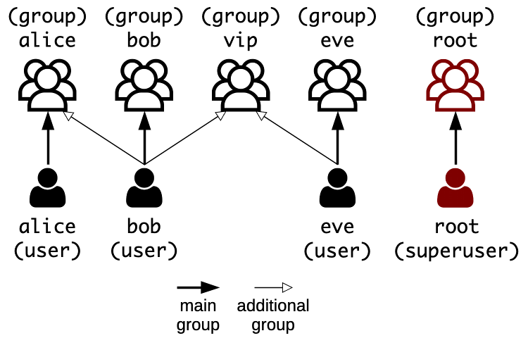

In many respects, the basics of Unix are the same for the original Unix operating system and Unix-like operating systems derived from Unix like Linux or macOS. From here on, when we refer to “Unix”, we will in fact be talking about all Unix and Unix-like systems in general.
Unix Basics
Learn the basics of Unix and Unix-like operating systems like Linux, and how to manage them from the command line.
On this page
Table of contents
Note
File system
The file system controls how data is stored and retrieved. Without it, information on a storage medium such as a hard drive would be one large body of data, with no way to tell where one piece of information stops and the next begins.
Various file systems exist:
| Operating system or device type | Common file systems |
|---|---|
| Linux | ext2, ext3, ext4 |
| macOS | HFS, APFS |
| Windows | NTFS |
| USB | FAT, exFAT |
Case-sensitivity
One of the differences between file systems is how they would treat these file names:
a-file.txtA-file.txtA-fIlE.txtA-FILE.txt
When you use macOS or Windows, your file system is probably HFS,
APFS or NTFS. These file systems are case-insensitive,
meaning that the four file names above represent the same file. You cannot
create both a-file.txt and A-FILE.txt in the same directory. As far as the
file system is concerned, that’s the same file.
When you use Linux, your file system is probably in the Extended File System (ext) family. It is a case-sensitive file system. The four names above represent 4 different files.
It is important to know this difference when you are transferring files between different file systems.
File hierarchy
In Unix systems, the file system is said to be rooted, meaning that there is
always one root, denoted by the path /.
Separate volumes such as disk partitions, removable media and network shares belong to the same file hierarchy (unlike Windows for example, where each drive has a letter that is the root of its file system tree).
Such volumes can be mounted on a directory, causing the volume’s file system tree to appear as that directory in the larger tree.
Inspecting volumes
The df (disk free) shows you all volumes and the available space on each of them
(the -h option displays size in a human-readable format instead of the raw number of bytes):
$> df -h
Filesystem Size Used Avail Use% Mounted on
tmpfs 99M 608K 98M 1% /run
/dev/sda1 9.7G 1.4G 8.3G 15% /
tmpfs 493M 0 493M 0% /dev/shm
tmpfs 5.0M 0 5.0M 0% /run/lock
tmpfs 493M 0 493M 0% /sys/fs/cgroup
/dev/sdb1 50G 19G 28G 41% /network-drive
You can see that there is only one root (/),
and that all other volumes are mounted somewhere in the file hierarchy.
For example, the last line represents a network drive mounted under the
/network-drive directory.
Mounted volumes are defined in the /etc/fstab file (file systems
table).
Common Unix directories
| Directory | Description |
|---|---|
/bin |
Fundamental binaries like ls or cp |
/boot |
Files required to successfully boot |
/dev |
Devices, i.e. file representations of (pseudo-)peripherals |
/etc |
System-wide configuration files |
/home |
User home directories |
/lib |
Shared libraries needed by programs in /bin |
/media |
Default mount point for removable devices (USB, etc) |
/opt |
Locally installed software |
/root |
Home directory of the root superuser |
/sbin |
System binaries (for system administration) |
/tmp |
Temporary files not expected to survive a reboot |
/usr |
Non-system-critical executables, libraries and resources |
/var |
Variable files (e.g. lock/log files, databases) |
Unix file types
Unix systems have regular files and directories like most other systems. But in addition to these, it represents various other things as files:
| Type | Description |
|---|---|
| File | A regular file |
| Directory | A directory containing any number of files |
| Symbolic link | A reference to another file |
| Named pipe | A connector from the output of one process to the input of another |
| Socket | A bidirectional endpoint for inter-process communication |
| Device | Representations of physical or logical peripherals (e.g. hard drive) |
Unix users
Unix operating systems like Linux are multi-user systems, meaning that more than one user can have access to the system at the same time.
A user is any entity that uses the system. This may be:
- A person, like Alice or Bob
- A system service, like a MySQL database or an SSH server
A Unix system maintains a list of user accounts representing these people and
system services, each with a different name such as alice, bob or
sshd. Each of these user accounts is also identified by a numerical user ID
(or UID).
Note
Note that one person may have multiple user accounts on a Unix system, as long as they each have a different name.
User access
Managing users is done for the purpose of security by limiting access in certain ways, such as file permissions.
The superuser, named root, has complete access to the system and its
configuration. It is intended for administrative use only.
Unix also has the notion of groups. Much like a user account, a group is identified by a name and by a numerical group ID (or GID). Each user belongs to a main group, and can also be added to other groups, which grants that user all privileges assigned to each group.
A Unix system usually creates a main group for each user, with the same name as
the user. For example, user alice has the alice group as its main group.
This provides a quick way of giving bob access to alice’s files by adding
him to the alice group, if necessary.

Permissions
Someone who logs in on a Unix system can use any file their user account is permitted to access. The system determines whether or not a user or group can access a file based on the permissions assigned to it.
There are three different permissions for files and directories. They are represented by one character:
| Permission | For files | For directories |
|---|---|---|
r |
Read the contents of the file | List the directory |
w |
Write to the file (modify it) | Create or delete files in the directory |
x |
Execute the file (if it’s a binary or a script) | Traverse the directory (to access a subdirectory) |
The symbol - (a hyphen) indicates that no access is permitted.
User categories
Each of the three permissions are assigned to three different categories of users:
| Category | Description |
|---|---|
owner |
The user who owns the file |
group |
The group that owns the file (any user in that group) |
other |
Any other user with access to the system |
Checking file permissions
When you run the ls command with the -l option (long format), you can
see more information about files, including their type and permissions:
$> ls -l
drwxr-xr-x 2 root root 4096 Sep 7 12:16 some-directory
-rwxr-x--- 1 root vip 755 Jan 18 2018 some-executable
-rw-r----- 1 bob bob 321 Jan 18 2018 some-file
lrwxrwxrwx 1 bob bob 39 Jan 18 2018 some-link -> some-file
Column 1 represents the permissions assigned to the file, while columns 3 and 4 represent their ownership. The first 10-letter column can be separated into one letter for the type of file, and three 3-letter groups for owner, group and other permissions respectively:
TYPE OWNER PERM GROUP PERM OTHER PERM OWNER GROUP
d rwx r-x r-x root root ... some-directory
- rwx r-x --- root vip ... some-executable
- rw- r-- --- bob bob ... some-file
l rwx rwx rwx bob bob ... some-link -> some-file
The file types you will most often handle are - for files,
d for directories and l for links. There are others like p for
named pipes, s for sockets and b
or c for block or character device files, but they
are outside the scope of this course.
Administrative access
Many administrative tasks such as installing packages, managing users or
changing file permissions can only be performed by the root user.
If you have the root user’s password (or an authorized public key), you can
log in as root directly. But you should avoid it as often as possible.
It is dangereous to log in as root. One wrong move and you could
irreversibly damage the system. For example:
- Delete a system-critical file or files
- Change permissions on system-critical executables
- Lock yourself out of the system (e.g. by disabling SSH on a server)
The sudo command
The sudo command (which means “superuser do”) offers another
approach to give users administrative access.
When trusted users precede an administrative command with sudo, they are
prompted for their own password. Once authenticated, the administrative
command is executed as if by the root user.
$> ls -la /root
ls: cannot open directory '/root': Permission denied
$> sudo ls -la /root
[sudo] password for jde:
drwx------ 4 root root 4096 Sep 12 14:53 .
drwxr-xr-x 24 root root 4096 Sep 12 14:44 ..
-rw------- 1 root root 137 Sep 11 09:51 .bash_history
-rw-r--r-- 1 root root 3106 Apr 9 11:10 .bashrc
...
Only trusted users can use sudo. Unauthorized usage will be
reported. The relevant logs can be checked with sudo journalctl $(which sudo) (if you are a trusted user).
The sudoers file
The /etc/sudoers file defines which users are trusted to use sudo. This is a
classic example (the basic syntax is described here):
Defaults env_reset
Defaults secure_path="/usr/local/sbin:/usr/local/bin:..."
root ALL=(ALL:ALL) ALL
%admin ALL=(ALL) ALL
%sudo ALL=(ALL:ALL) ALL
This configuration allows members of the sudo group to execute any command
(i.e. they are trusted users).
NEVER EVER edit this file by hand, as you will break the sudo command if
you introduce syntax errors into the file. Use the visudo command which will
not let you save unless the file is valid.
With these defaults settings common to most Unix systems, you can simply add a
user to the sudo group to make them trusted sudo users.
The su command
The su command (which means “switch user”) is also a common
administrative tool. As its name indicates, it can be used to log in as another
user. If you are a trusted sudoer, you can use it to become another user:
$> whoami
bob
$> ls -la /home/alice
ls: cannot open directory '/home/alice': Permission denied
*$> sudo su -l alice
[sudo] password for bob:
$> whoami
alice
The -l option of the su command makes sure you get a login shell, i.e.
an environment similar to what you get when actually logging in. If you don’t
use it, you will have a minimal shell environment that might be missing some
things.
Performing tasks as another user
The previous su command opens a new shell in which you are logged in as alice.
You can do whatever you need to do with the files accessible only to alice,
then go back to your previous shell with exit:
$> ls -la /home/alice
total 20
drwxr-x--- 2 alice alice 4096 Sep 12 16:35 .
drwxr-xr-x 6 root root 4096 Sep 12 16:35 ..
-rw-r--r-- 1 alice alice 220 Apr 4 18:30 .bash_logout
...
$> echo foo > ~/bar.txt
$> cat /home/alice/bar.txt
foo
$> exit
$> whoami
bob
Performing administrative tasks as root
You can also use the su command to log in as root.
You can perform any necessary administrative tasks without sudo (since you are root),
then again go back to your previous shell with exit:
$> sudo su -l root
$> whoami
root
$> journalctl $(which sudo)
...
$> exit
$> whoami
bob
As mentioned before, be careful not to break the system when you are root.
User database files
These files define what user accounts and groups are available on a Unix system:
| File | Contents |
|---|---|
/etc/passwd |
List of user accounts, as well as their primary group, home directory and default shell (it originally also contained user passwords, hence the name) |
/etc/shadow |
Hashes of user passwords (more secure than storing them in word-readable /etc/passwd) |
/etc/group |
List of groups and their members |
/etc/gshadow |
Hashes of group passwords (optional), group administrators |
You should never edit these files by hand.
Unix systems provide various system administration commands for this
purpose, such as useradd, passwd and groupadd for Linux.
The /etc/passwd file
Each line in /etc/passwd defines a user account, with data
separated by semicolons:
jde:x:500:500:jde:/home/jde:/bin/bash
- Username (
jde) - The name of the user account (used to log in) - Password (
x) - User password (orxif it is stored in/etc/shadow) - User ID (UID) (
500) - The numerical equivalent of the username - Group ID (GID) (
500) - The numerical equivalent of the user’s primary group name (often the same as the UID for most users, on a Unix system with default settings) - GECOS (
jde) - Historical field used to store extra information (usually the user’s full name) - Home directory (
/home/jde) - Absolute path to the user’s home directory - Shell (
/bin/bash) - The program automatically launched whenever the user logs in (e.g. on a terminal or through SSH)
Changing the shell can be used to prevent some users, like system users, from
logging in (e.g. by using /bin/false or /usr/sbin/nologin).
The /etc/group file
Each line in /etc/group defines a group, also semicolon-separated:
vip:x:512:bob,eve
- Group name (
vip) - The name of the group - Group password (
x) - Optional group password (orxif the password is stored in/etc/gshadow); if specified, allows users not part of the group to join it with the correct password - Group ID (GID) (
512) - The numerical equivalent of the group name - Member list (
bob,eve) - A comma-separated list of the users belonging to the group
The shadow files
Both /etc/passwd and /etc/group must be readable by anyone on a Unix
system, because they are used by many programs to perform the translation from
username to UID and from group name to GID.
It is therefore bad practice to store passwords in these files, even encrypted or hashed. Any user might copy them and attempt a brute-force attack (which could be done on a separate, dedicated infrastructure).
Therefore, the corresponding shadow files exist:
/etc/shadowstores password hashes for user accounts, and other security-related data such as password expiration dates./etc/gshadowstores password hashes for groups, and other security-related data such as who is the group administrator.
These files are only readable by the root user (or any user that belongs to
the root or shadow groups).
User management
The following commands can be used to create, modify and delete users:
| Command | Purpose |
|---|---|
useradd |
Create a user account (and by default, a corresponding group) |
usermod |
Modify an existing user account |
passwd |
Change (or set) a user’s password |
userdel |
Delete a user account |
deluser |
Friendlier frontend to the userdel command. Delete a user account or remove a user from a group |
groupadd |
Create a new group |
groupmod |
Modify an existing group |
groupdel |
Delete a group |
Use man <command> to read their manual, e.g. man useradd.
Note
Note that these commands are specific to Ubuntu. They might differ slightly in other Linux distributions or other Unix systems.
Types of users
As we said at the beginning of this section, a user can be a login user representing a person or a system user generally representing a service.
You may wonder why we even need system users? In Unix systems, users are the fundamental access control mechanism, so we need system users to limit the permissions of people using the system, but also of services running on that system. For example:
- Alice should not be able to access Bob’s files without his permission, and vice-versa.
- A database server like MySQL needs to access some files for storage, but it doesn’t need to access Alice’s or Bob’s files. It also doesn’t need to be able to log in since it’s a service and not a person.
Creating a login user
To create a login user (e.g. a user that can be used by an actual person to
log in to the machine), you will need to use the useradd and passwd
commands:
$> sudo useradd -m -s /bin/bash jde
$> sudo passwd jde
Enter new UNIX password:
Retype new UNIX password:
passwd: password updated successfully
The -m option to the useradd command instructs it to also create a home
directory for the user, which by default will be /home/jde in this case.
The -s option specifies the user’s login shell. Since it defaults to a
simple Bourne shell (/bin/sh) on most systems, in this example we use
the more advanced Bash shell (/bin/bash) for the user’s convenience.
Note
It is possible to give an encrypted password directly to the useradd
command with the -p option instead of using passwd, but it’s bad practice
because running commands can be seen by other users with ps.
Checking the created login user
You can see the newly created user (and corresponding group) by looking at the last line of the relevant user database files:
$> tail -n 1 /etc/passwd
jde:x:1004:1004::/home/jde:/bin/bash
$> tail -n 1 /etc/group
jde:x:1004:
The tail command displays the last 10 lines of a file. With the -n option
(number) set to 1, it only displays the last line.
Note that on a typical Linux system, regular users will have UIDs starting at
1000 and incremented every time a new user is created. This is defined by the
UID_MIN and UID_MAX options in the /etc/login.defs file.
Creating a system user
To create a system user (e.g. a technical user that will need to run an
application or service, but does not need to log in), the useradd command is
sufficient:
$> sudo useradd --system -s /usr/sbin/nologin myapp
The user is created a bit differently with the --system option. Notably, the
UID is chosen in a different range, to help quickly differentiate system users
from login users.
You can also add the -m (home) option if necessary. Some applications or
services might expect the user to have a home directory.
Checking the created system user
Check the user database files again:
$> tail -n 1 /etc/passwd
myapp:x:999:999::/home/myapp:/usr/sbin/nologin
$> tail -n 1 /etc/group
myapp:x:999:
Note that a home directory is configured even if it wasn’t created. This is not an issue.
System users use a different UID range by default, specified by the
SYS_UID_MIN and SYS_UID_MAX options in the /etc/login.defs file. On
Ubuntu, for example, it will start at 999 and be decremented by 1 for each new
user.
You can try to use su to try to switch to that user.
It won’t work:
$> sudo su -l myapp
No directory, logging in with HOME=/
This account is currently not available.
If you really need to log in as that user for administative purposes, the su
command allows you to change the shell. For this example, the command would be
sudo su -l -s /bin/bash myapp.
Difference between login and system users
There is no fundamental difference between a login and a system user. It’s simply an organizational distinction to make life easier for system administrators.
- Both login and system users are stored in the same user database files with the same format.
- A login user can log in because it has a password and a login shell.
- A system user has no password and no login shell and therefore cannot log in.
- A system user has a UID in a different range by default. (This difference can be utilized by the GUI, for example to omit system users when populating a username dropdown list at login.)
You can even transform a login user into a system user and vice-versa through
judicious use of the usermod command.
Other useful user management commands
Here’s a few command examples for common administrative tasks:
| Example | Effect |
|---|---|
usermod -a -G vip jde |
Add (append) user jde to group vip. |
deluser jde vip |
Remove user jde from group vip. |
userdel -r jde |
Remove user jde and its home directory |
passwd --lock jde |
Lock the password for user jde (note that it may still be possible for that user to log in using other authentication methods, such as a public key) |
usermod --shell /usr/sbin/nologin jde |
Lock user jde out of the system (note that this will not disconnect the user if already connected, but it prevents future logins) |
Permission management
The following commands can be used to change the permissions or ownership of files:
| Command | Purpose |
|---|---|
chmod |
Change the mode (another name for file permissions) of a file or files |
chown |
Change the owner (and optionally the group) of a file or files |
Use man <command> to read their manual, e.g. man chmod.
The chown command
The chown command is quite simple to use. The following command
changes the owner of file.txt to alice:
$> sudo chown alice file.txt
The following command changes the owner of file.txt to bob and its group to
vip:
$> sudo chown bob:vip file.txt
You can also recursively (with the -R option) change the owner and group of a
directory and all its files:
$> sudo chown -R bob:bob /home/bob
Be EXTREMELY CAREFUL when changing ownership recursively. Changing the ownership of system-critical files may break your system. Make sure you typed the correct path.
The chmod command
The chmod command is used to change file permissions and is a little
more complicated. It has two syntaxes to specify which permissions you want:
symbolic mode and octal mode.
With symbolic mode, you specify which permissions you want with letters
similar to those shown by ls -l, and you have more control over which specific
permissions you want to add or remove:
$> sudo chmod ug+x script.sh
$> sudo chmod a-w readonly.txt
$> sudo chmod o-rwx secret.txt
With octal mode, you specify all of a file’s permissions at once. You cannot add or remove a specific permission without also setting the others:
$> sudo chmod 755 executable.sh
$> sudo chmod 640 secret.txt
Symbolic mode
The symbolic syntax of the chmod command is:
chmod [reference...][operator][permission...] file
Specify one or more references ([reference...]) to select user categories:
| Reference | Category | Description |
|---|---|---|
u |
User | The user who owns the file (the owner) |
g |
Group | The group that owns the file |
o |
Others | Any other user with access to the system |
a |
All | All three of the above, same as ugo |
Use one of the available operators ([operator]):
| Operator | Description |
|---|---|
+ |
Add permissions to the specified category of users |
- |
Remove permissions from the specified category of users |
= |
Set the exact permissions for the specified category of users |
Using symbolic mode
The symbolic syntax basically allows you to specify:
- What category or categories of users you want to change permissions for (
u,g,oora) - What kind of change you want to do (
+,-or=) - What permission(s) you want to change (
rfor read,wfor write orxfor execution/traversal)
For example, the following command adds read and write permissions to u (the
owner of the file):
$> sudo chmod u+rw file.txt
The following command sets the permissions for g (the group of the file) to
read and execute:
$> sudo chmod g=rx file.txt
Octal mode
Unix file permissions can be represented in octal (base-8) notation:
| Octal | Permissions | Text | Binary |
|---|---|---|---|
| 7 | read, write and execute | rwx |
111 |
| 6 | read and write | rw- |
110 |
| 5 | read and execute | r-x |
101 |
| 4 | read only | r-- |
100 |
| 3 | write and execute | -wx |
011 |
| 2 | write only | -w- |
010 |
| 1 | execute only | --x |
001 |
| 0 | none | --- |
000 |
You can represent an entire file’s permissions with 3 octal digits:
755is equivalent torwxr-xr-x.751is equivalent torwxr-x--x.640is equivalent torw-r-----.
Using octal mode
The octal syntax does not allow you to make a granular change to a specific
permission (e.g. u+x). However, it does allow you to easily change an entire
file’s permissions in one command.
For example, the following command sets permissions rwxr-xr-x to script.sh:
$> sudo chmod 755 script.sh
The following command sets permissions rw-r----- to secret.txt:
$> sudo chmod 640 secret.txt
Welcome to the future
Some of the commands mentioned in this course may be older than you, although they are regularly updated. But new command line tools are also being developed today:
- The
dufcommand is a modern alternative todfto list free disk space, written in Rust, a modern systems programming language.